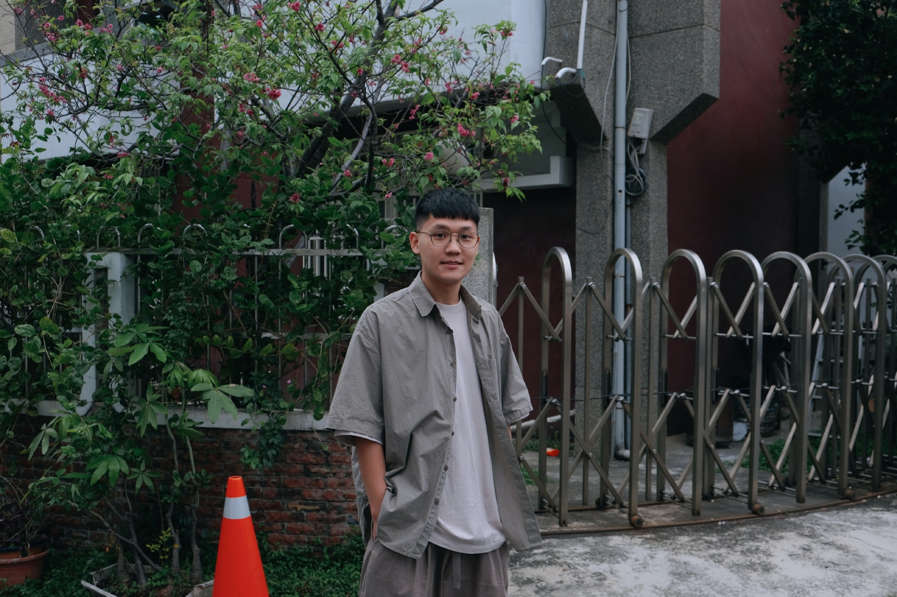

<div class="container-fluid p-0 border-bottom border-2">
    <div class="row g-0 ">
        <div class="col-md-8 border-end border-2"> 
            
        </div>
        <div class="col-md-4 p-4 p-md-5">
            <div class="d-flex mb-8">
                <h2 class="fs-1">東穎</h2>
                <h2 class="title-stroke fs-1">DEAN </h2>
            </div>
            <p class="fw-bold fs-6 mb-4">學習經歷</p>
            <p>電機系畢業後並沒有選擇與大部分同學相同的路，我選擇跨領域學習，因為希望職業能具美感創造，且結合科技產品相關之工作，因此開啟了自學前端設計之路，一直探索美感相關的工作，在學習前端技術的路上，顛覆過去對於程式的印象，感受到人生終於有在前進，不停把自己放在學習的環境中，促使自己能更快的成長，希望未來能成為一位有能力獨當一面的開發者。
            </p>
        </div>
    </div>
    
</div>
